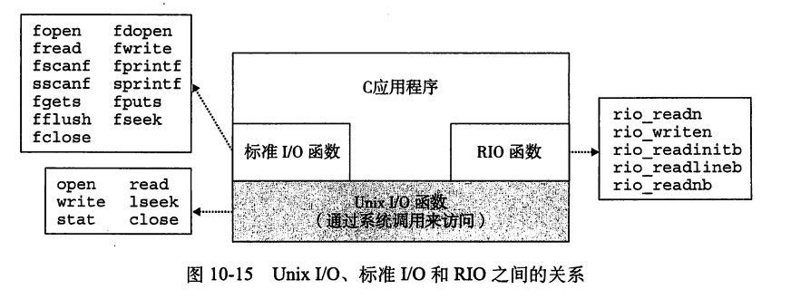

CSAPP_阅读笔记_10_系统级I/O
在Unix 系统中，是通过使用由内核提供的系统级 Unix I/O 函数来实现这些较高级别的 I/0 函数的。大多数时候，高级别 IO 函数工作良好，没有必要直接使用 Unix I/O。那么为什么还要麻烦地学习 Unix I/O 呢?
- 了解 UnixIO 将帮助你理解其他的系统概念。I/O是系统操作不可或缺的一部分，因此我们经常遇到 IO 和其他系统概念之间的循环依赖。例如，I/O 在进程的创建和执行中扮演着关键的角色。反过来，进程创建又在不同进程间的文件共享中扮演着关键角色。因此，要真正理解 I/O，你必须理解进程，反之亦然。在对存储器层次结构、链接和加载、进程以及虚拟存储器的讨论中，我们已经接触了I0的某些方面。既然你对这些概念有了比较好的理解，我们就能闭合这个循环，更加深入地研究 I/O。
- 有时你除了使用Unix I/O以外别无选择。在某些重要的情况下，使用高级 I/O 函数不太可能，或者不太合适。例如，标准 I/O库没有提供读取文件元数据的方式，如文件大小或文件创建时间。另外，I/O库还存在一些问题，使得用它来进行网络编程非常冒险。
1.Unix I/O
一个Unix文件就是一个m个字节的序列:
所有的 IO 设备，如网络、磁盘和终端，都被模型化为文件，而所有的输入和输出都被当做对相应文件的读和写来执行。这种将设备优雅地映射为文件的方式，允许Unix内核引出一个简单、低级的应用接口，称为 Unix I/O，这使得所有的输入和输出都能以一种统一且一致的方式来执行:
-
打开文件。一个应用程序通过要求内核打开相应的文件，来宣告它想要访问一个 IO 设备。内核返回一个小的非负整数，叫做描述符，它在后续对此文件的所有操作中标识这个文件。内核记录有关这个打开文件的所有信息。应用程序只需记住这个描述符。
Unix 外壳创建的每个进程开始时都有三个打开的文件:
- 标准输入(描述符为0)
- 标准输出(描述符为1)
- 标准错误(描述符为2)
头文件<unistd.h>定义了常量
- STDIN_FILENO
- STDOUT_FILENO
- STDERR_FILENO
它们可用来代替显式的描述符值。
-
改变当前的文件位置。对于每个打开的文件，内核保持着一个文件位置k，初始为0。这个
文件位置是从文件开头起始的字节偏移量。应用程序能够通过执行seek 操作，显式地设置
文件的当前位置为 k。 -
读写文件。一个读操作就是从文件拷贝n>0个字节到存储器，从当前文件位置k开始
然后将k增加到k+n。给定一个大小为m字节的文件，当k>m时执行读操作会触发一
个称为 end-of-file(EOF)的条件，应用程序能检测到这个条件。在文件结尾处并没有明确的“EOF符号” 类似地，写操作就是从存储器拷贝n>0个字节到一个文件，从当前文件位置k开始然后更新 k。
-
关闭文件。当应用完成了对文件的访问之后，它就通知内核关闭这个文件。作为响应，内核释放文件打开时创建的数据结构，并将这个描述符恢复到可用的描述符池中。无论一个进程因为何种原因终止时，内核都会关闭所有打开的文件并释放它们的存储器资源。
文件
每个 Linux 文件都有一个表征其在系统中角色的类型：
- 常规文件（Regular File）：对于应用程序来说，常规文件分为仅包含 ASCII 或 Unicode 字符的文本文件（Text File）和二进制文件（Binary File）；但对于内核而言，两者没有区别。Linux 文本文件由一系列文本行（Text Line）组成，其中每一行都以换行符
\n结尾； - 目录（Directory）：目录是由链接（Link）数组构成的文件。链接将一个文件名映射到一个文件，该文件可能是另一个目录（如下图所示）。每个目录中至少包含两个链接：
.指向目录本身，而..指向上级目录； - Socket：用于通过网络与另一个进程通信的文件。
2.打开和关闭文件
进程是通过调用 open函数来打开一个已存在的文件或者创建一个新文件的：
1 | |
返回的文件描述符(fd)是进程当前未打开的最小描述符。参数flags指示进程如何访问文件：
O_RDONLY：只读O_WRONLY：只写O_RDWR：读写
该参数还可以与一个或多个位掩码进行或（OR）运算，这些位掩码提供写入的附加说明：
O_CREAT：如果文件不存在，则创建一个空文件；O_TRUNC：如果文件已经存在，则清空文件内容；O_APPEND：在每次写入操作之前，将文件位置设置为文件末尾。
若文件已存在，参数mode应设为 0；反之，则设为新文件的访问权限位，可选项如下图所示：
作为上下文的一部分，每个进程都有一个umask，它是通过调用umask函数来设置的。当进程通过带某个 mode 参数的 open函数调用来创建一个新文件时，文件的访问权限位被设置为 mode& ~umask。例如，假设我们给定下面的mode和umask默认值:
1 | |
最后，进程通过调用 close函数关闭一个打开的文件,若文件描述符已关闭将引发错误:
1 | |
3.读和写文件
应用程序分别调用read和write函数来执行输入和输出：
1 | |
read函数从描述符为fd的当前文件位置复制最多n个字节到内存中buf指向的位置，write函数则从内存中buf指向的位置复制最多n个字节到参数fd的当前位置。示例程序使用上述两种函数将标准输入以字节为单位复制到标准输出：
1 | |
ssizet和sizet有些什么区别?
你可能已经注意到了，read函数有一个sizet的输入参数和一个ssizet的返回值。那么这两种类型之间有什么区别呢?size t被定义为unsigned int，而ssize t(有符号的大小)被定义为 int。read函数返回一个有符号的大小，而不是一个无符号的大小，这是因为出错时它必须返回一1。有趣的是，返回一个-1 的可能性使得 read 的最大值减小了一半,从 4GB 减小到了2GB。
在某些情况下，读写操作传输的字节数小于应用程序请求的字节数。不足数（Short Count）的产生并不代表发生了错误，它可能由多种原因导致：
- 读取时遇到 EOF：若我们对一个 20 字节的文件执行
read(fd, *buf, 50)，那么第一次调用将返回一个 20 的不足数，第二次调用则返回 0（EOF）； - 从终端读取文本行：若打开的文件是终端设备（即键盘和显示器），那么每次
read调用都将传输一个文本行并返回一个与文本行大小相等的不足数； - 读写 Socket：若打开的文件是 Socket，那么内部缓冲区限制和网络延迟将使读写操作返回不足数。
因此除遇到 EOF 外，读写磁盘文件不会导致不足数的产生。但如果我们想要构建健壮而可靠的网络应用程序，就必须重复调用read和write以保证所有请求的字节均已被传输。
4.用RIO包健壮地读写
**RIO(Robust I0，健壮的I/O)**会自动为你处理上文中所述的不足值。在像网络程序这样容易出现不足值的应用中，RIO包提供了方便、健壮和高效的 IO。RIO 提供了两类不同的函数:
- 无缓冲的输入输出函数。这些函数直接在存储器和文件之间传送数据，没有应用级缓冲
它们对将二进制数据读写到网络和从网络读写二进制数据尤其有用。 - 带缓冲的输入函数。从应用程序级别的缓冲区中读取文本行和二进制数据，与标准 I/O（如
printf）函数类似。该函数是**线程安全（Thread-safe）**的，并且可以对同一描述符任意交错（Interleave）。例如，我们可以从描述符中读取一些文本行，然后读取一些二进制数据，最后再读取一些文本行。
4.1 RIO的无缓冲的输入输出函数
通过调用rio_readn和 rio_writen函数，应用程序可以在存储器和文件之间直接传送数据。
1 | |
rio_readn函数从参数fd的当前文件位置复制最多n个字节到内存中usrbuf指向的位置，rio_writen函数则从内存中usrbuf指向的位置复制最多n个字节到参数fd的当前位置。前者只有在遇到 EOF 时返回不足数，后者则从不返回不足数。
若上述函数被应用程序的信号处理程序的返回中断，它们会重新调用read和write函数：
1 | |
4.2 RIO的带缓冲的输入函数
假设我们需要编写一个计算文本文件行数的程序，最简单的方法便是调用read函数每次读取一个字节并检查是否有换行符。但由于read是系统调用，频繁的上下文切换将导致程序效率低下。
更好的方法是调用包装函数rio_readlineb从内部读取缓冲区（Read Buffer）复制文本行，只有当缓冲区为空时才调用read以重新填充缓冲区。RIORIO 包还为同时包含文本行和二进制数据的文件（如 HTTP 响应）提供了rio_readn函数的有缓冲版本，即rio_readnb：
1 | |
在调用上述两种有缓冲的输入函数前，我们需要为每个打开文件描述符调用一次rio_readinitb。该函数将描述符fd与地址rp处的读取缓冲区（类型为rio_t）相关联：
1 | |
RIO包读取例程的核心是rio_read函数，它其实是read函数的有缓冲版本。若读取缓冲区中的未读字节数rp->rio_cnt为 0，则在循环内调用read函数对其填充；若读取缓冲区非空，则调用memcpy函数将min(n, rp->rio_cnt)字节从缓冲区复制到usrbuf指向的内存位置：
1 | |
对于一个应用程序，rio_read函数和 Unix read函数有同样的语义。在出错时，它返回值 -1，并且适当地设置errno。在EOF时，它返回值0。如果要求的字节数超过了读缓冲区内未读的字节的数量，它会返回一个不足值。两个函数的相似性使得很容易通过用rio_read代替 read来创建不同类型的带缓冲的读函数。例如，用rioread代替read。
实际上，rio_readnb与rio_readn具有完全相同的结构，只不过我们用rio_read替换了read：
1 | |
类似地，rio_readlineb函数从文件rp中读取一个文本行并将其复制到内存中usrbuf指向的位置。循环内每次对rio_read的调用都会把读取缓冲区中的一个字节复制到&c，然后检查它是否是换行符：
1 | |
5.读取文件元数据
应用程序能够通过调用 stat 和 fstat 函数，检索到关于文件的信息(有时也称为文件的元数据(metadata))。
1 | |
函数stat使用文件名*filename作为输入，将信息填写到stat结构体中。fstat与之类似，但它的参数是文件描述符fd。结构体stat如下所示，我们只需关注字段st_mode和st_size：
1 | |
st_size包含了文件的大小，而st_mode则包含了文件的访问权限和类型。。Unix识别大量不同的文件类型。普通文件包括某种类型的二进制或文本数据。对于内核而言，文本文件和二进制文件毫无区别。目录文件包含关于其他文件的信息。套接字是一种用来通过网络与其他进程通信的文件。Unix提供的宏指令根据stmode 成员来确定文件的类型。下图列出了这些宏的一个子集。
6.读取目录内容
应用程序调用opendir和readdir函数读取目录中的内容：
1 | |
函数opendir以目录的路径名为参数，返回一个指向目录流（Directory Stream）的指针。流是对有序项目列表的抽象，此处指的是目录中条目的列表。函数readdir返回指向目录流中下一个条目的指针，每个条目都是一个dirent结构体：
1 | |
d_name是文件名，d_ino是文件的 inode 数。当发生错误时，readdir返回NULL并设置errno。
函数closedir关闭目录流并释放所有相关资源：
1 | |
7.共享文件
可以用许多不同的方式来共享 Unix 文件。除非你很清楚内核是如何表示打开的文件，否则文件共享的概念相当难懂。内核用三个相关的数据结构来表示打开的文件:
- 描述符表(descriptor table)。每个进程都有它独立的描述符表，它的表项是由进程打开的文件描述符来索引的。每个打开的描述符表项指向文件表中的一个表项。
- 文件表(fle table)。打开文件的集合是由一张文件表来表示的，所有的进程共享这张表。每个文件表的表项组成(针对我们的目的)包括有当前的文件位置、引用计数(referencecount)(即当前指向该表项的描述符表项数)，以及一个指向v-node 表中对应表项的指针关闭一个描述符会减少相应的文件表表项中的引用计数。内核不会删除这个文件表表项，直到它的引用计数为零。
- v-node 表(v-node table)。同文件表一样，所有的进程共享这张 v-node 表。每个表项包含stat结构中的大多数信息，包括stmode和stsize成员。
上图展示了一个示例，其中描述符1和4通过不同的打开文件表表项来引用两个不同的文件。这是一种典型的情况，没有共享文件，并且每个描述符对应一个不同的文件。
上图所示，多个描述符也可以通过不同的文件表表项来引用同一个文件。例如，如果以同一个filename 调用 open 函数两次，就会发生这种情况。关键思想是每个描述符都有它自己的文件位置，所以对不同描述符的读操作可以从文件的不同位置获取数据。
我们也能理解父子进程是如何共享文件的。假设在调用 fork之前，父进程有如图 10-11所示的打开文件。然后，上图展示了调用fork后的情况。子进程有一个父进程描述符表的副本。父子进程共享相同的打开文件表集合，因此共享相同的文件位置。一个很重要的结果就是在内核删除相应文件表表项之前，父子进程必须都关闭了它们的描述符。
8.I/O重定向
dup2函数将描述符表条目oldfd复制到newfd并覆盖其原始内容。如果newfd已经打开，则该函数在复制oldfd之前会先关闭newfd：
1 | |
假设某进程的打开文件数据结构如上图 10.12 所示。描述符 1（标准输出）指向文件 A（如终端），描述符 4 指向文件 B（如磁盘上的文件），文件 A 和 B 的refcnt均为 1。那么该进程调用函数dup2(4, 1)后情况变为：
文件 A 被关闭，内核会删除其打开文件表和 v-node 表条目。两个描述符均指向文件 B，其refcnt已增加为 2。从现在开始，任何写入到标准输出的数据都会被重定向到文件 B。
9.标准I/O
ANSI C定义了一组高级输人输出函数，称为标准I0库，为程序员提供了Unix I/0的较高级别的替代。这个库(libc)提供了打开和关闭文件的函数(fopen和fclose)、读和写字节的函数(fread和 fwrite)、读和写字符串的函数(fgets和 fputs)，以及复杂的格式化的I/O所数(scanf和printf)。
标准 IO库将一个打开的文件模型化为一个流。对于程序员而言，一个流就是一个指向FILE类型的结构的指针。每个ANSIC程序开始时都有三个打开的流stdin、stdout和stderr，分别对应于标准输人、标准输出和标准错误:
1 | |
类型为 FILE 的流是对文件描述符和流缓冲区的抽象。流缓冲区的目的和 RIO 读缓冲区的一样:就是使开销较高的 Unix I/O 系统调用的数量尽可能的小。例如，假设我们有一个程序，它反复调用标准 IO的 getc函数，每次调用返回文件的下一个字符。当第一次调用 getc时，库通过调用一次 read 函数来填充流缓冲区，然后将缓冲区中的第一个字节返回给应用程序。只要缓冲区中还有未读的字节，接下来对 getc的调用就能直接从流缓冲区得到服务。
9.综合:我该使用哪些 1/0 函数
Unix I/O、标准 I/O 和 Rio 包函数之间的关系如下图所示：

那么我们应当使用哪种 I/O 函数呢？以下是一些建议：
- 尽可能使用标准 I/O 函数，它们是在磁盘和终端上执行 I/O 操作的最佳选择；
- 不要使用
scanf或rio_readlineb函数读取二进制文件，它们是专门为读取文本文件设计的； - 将标准 I/O 函数用于 Socket 时可能会出现一些令人讨厌的问题，因此我们应当在网络编程时使用 Rio 包函数。
总结：
一切都是文件，都可以用 “”打开open –> 读写write/read –> 关闭close” 模式来操作。输入/输出(I/O) 是指主存和外部设备(如磁盘，终端，网络)之间拷贝数据过程。